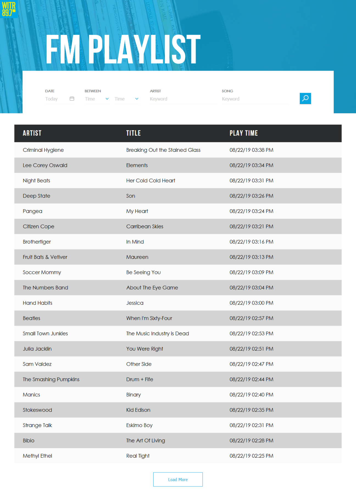

WITR 89.7 is RIT’s student run radio station. Independent multi-genre music has been beamed 25 miles in all directions of RIT since 1961. In addition to providing great music WITR holds New York State’s second largest vinyl record library. In 1992, the count was estimated at 30,000 records and 5,000 CD’s.
During my time as the Internal Developer at WITR I rebuilt their music logger, maintained their current website, and designed a new website. In the past the music logger ran off of long polling to be notified of each new song played on air, this approach was not only fragile but had a memory leak problem. As a more robust approach I built the new logger using web sockets.
Not only did the Logger need to work well for the public, DJs also needed to be able to manually add songs to it during their sets. Once the Logger detects it has been opened in the radio station subnet it shows a UI to add and edit tracks.
Working for the student run radio station offered an intersting contrast from the monoloth BMW plant. I enjoyed the opportunity to give back to my school and engage with new friends on a personal level.